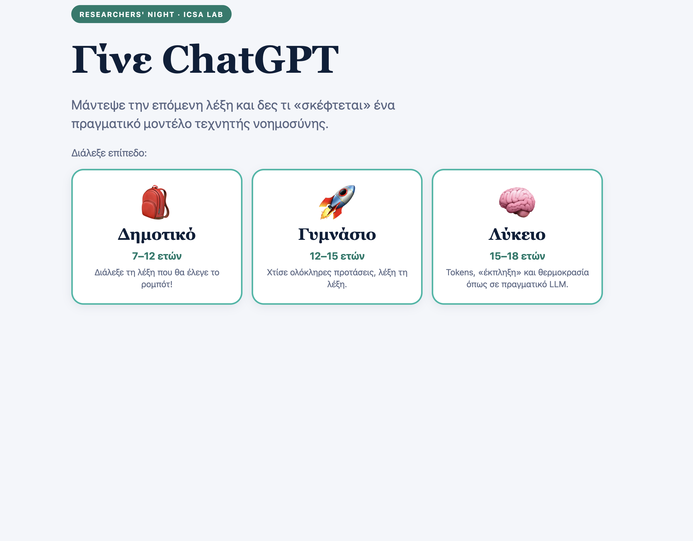
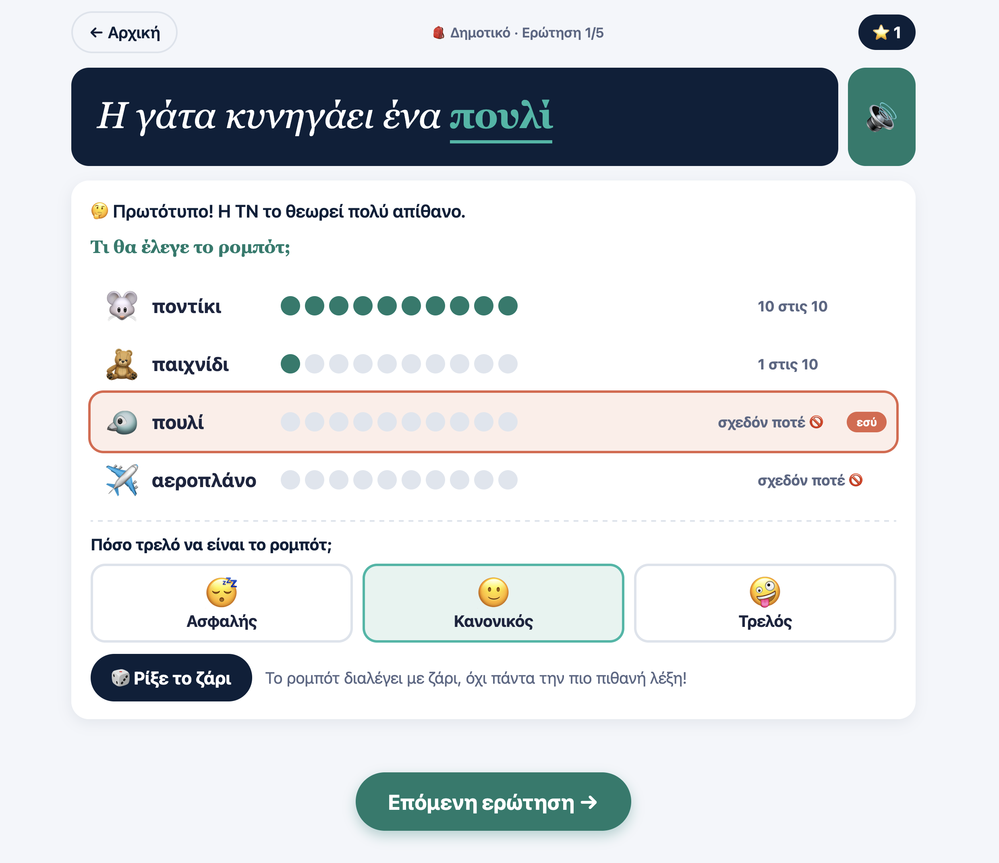
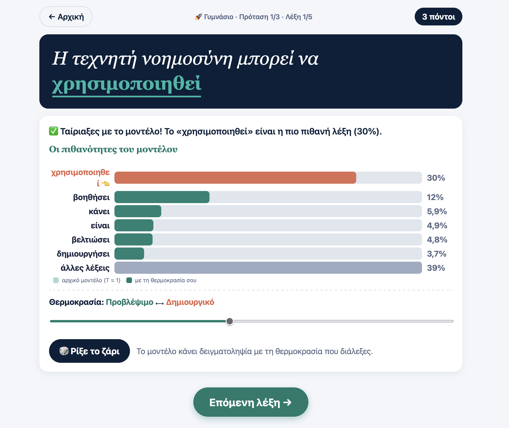
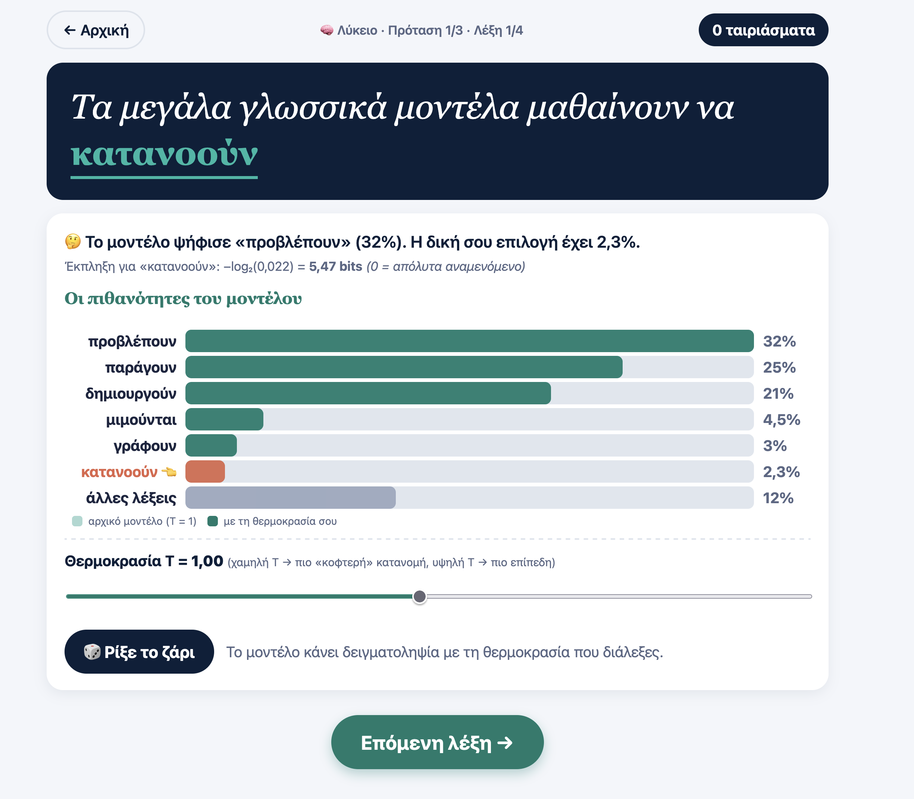

GPT Game
«Γίνε ChatGPT» — guess the next word and see what a real language model is thinking.
1 About
A hands-on demo of next-word prediction, aimed at showing different age groups how an LLM builds a sentence one token at a time. Visitors pick an age tier — Δημοτικό (7–12), Γυμνάσιο (12–15) or Λύκειο (15–18) — and the game adjusts accordingly: younger players pick the word a "robot" would say from a handful of options, while older players see full token probabilities, surprisal in bits, and a temperature slider that makes the model's choices more predictable or more chaotic. The goal is to make an abstract idea — how an LLM "thinks" about meaning — visible and playable at any age.
2 Preview
The three tiers, from picking a word out of a lineup to reading full next-token probability bars with a live temperature control.




3 Play
Opens the interactive game in a new tab.